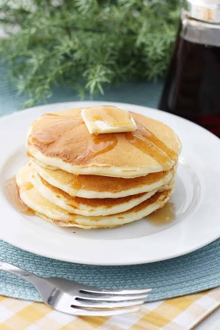

Pancakes Recipe

Fluffy and delicious pancakes that are perfect for breakfast or brunch.
A classic favorite for all ages!
Ingredients:
- 1 cup all-purpose flour
- 2 tablespoons sugar
- 1 teaspoon baking powder
- 1/2 teaspoon baking soda
- 1/4 teaspoon salt
- 3/4 cup buttermilk
- 1/4 cup milk
- 1 large egg
- 2 tablespoons melted butter
Instructions:
- In a large bowl, whisk together flour, sugar, baking powder, baking soda, and salt.
- In another bowl, whisk together buttermilk, milk, egg, and melted butter.
- Pour the wet ingredients into the dry ingredients and stir until just combined. Do not overmix; the batter should be slightly lumpy.
- Heat a non-stick skillet or griddle over medium heat and lightly grease with butter or cooking spray.
- Pour 1/4 cup of batter onto the skillet for each pancake. Cook until bubbles form on the surface and the edges look set, about 2-3 minutes. Flip and cook for another 1-2 minutes until golden brown.
- Repeat with the remaining batter, greasing the skillet as needed.
- Serve warm with your favorite toppings such as maple syrup, fresh berries, or whipped cream. Enjoy!
Back to Home